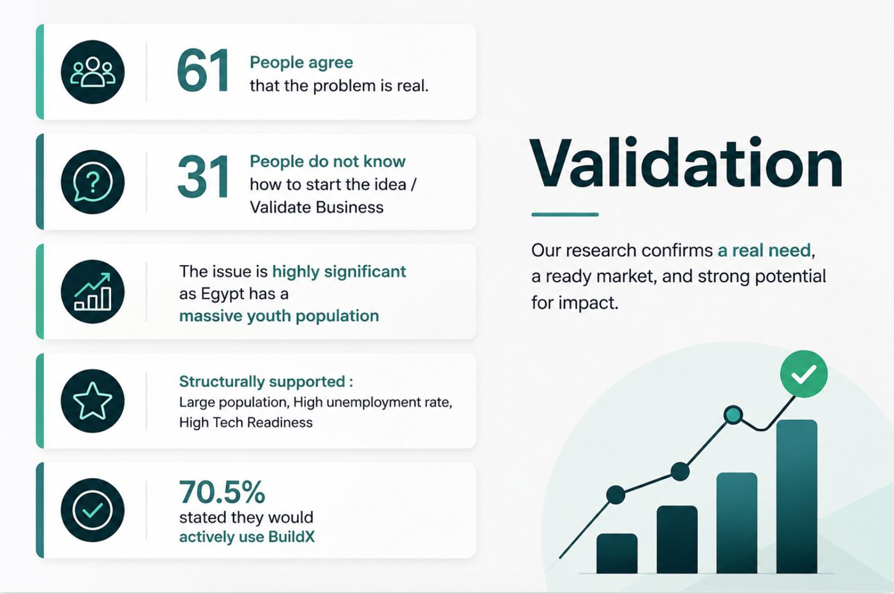
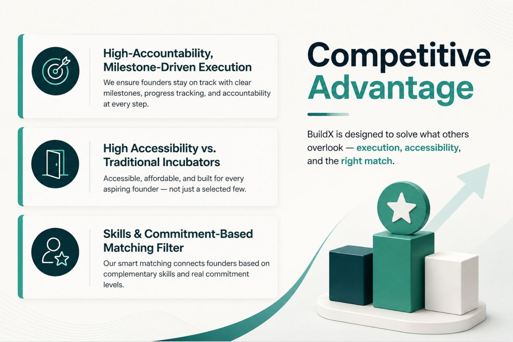
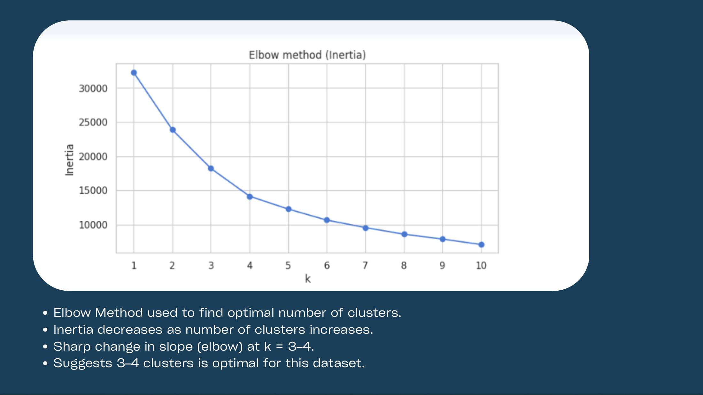
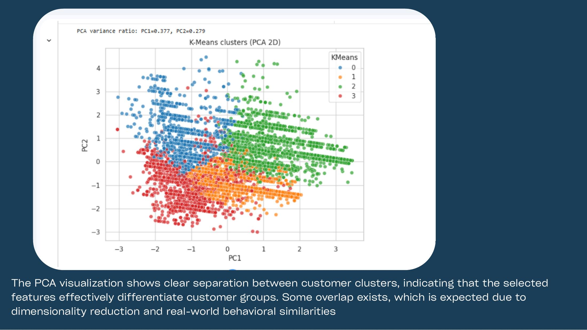
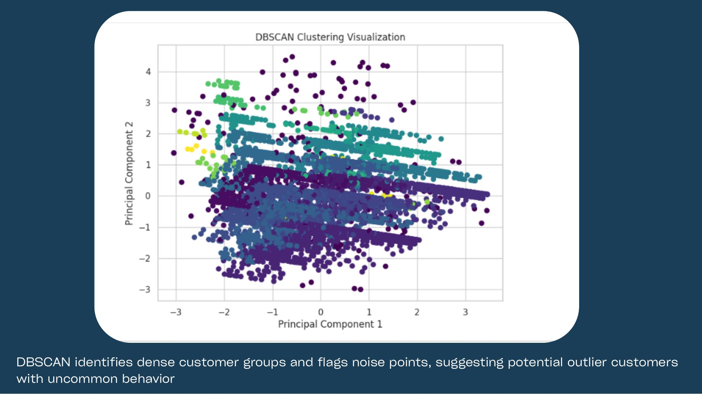
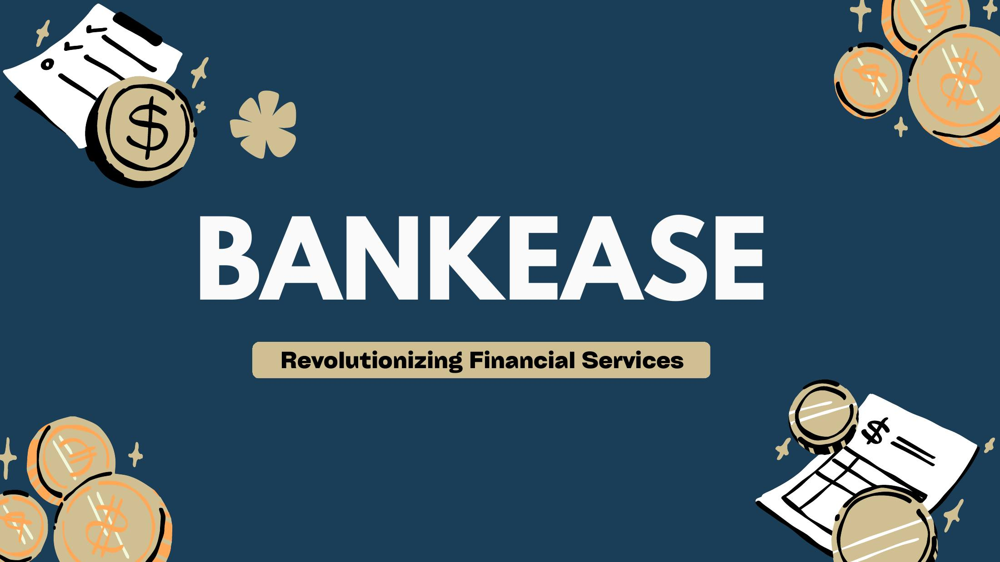

Jana Elshoura
Where business meets creativity. I started in Architecture, moved to Business Informatics, and now bring a designer's eye and an analytical mind to brands, data and strategy.
- Final year Business Informatics, German International University
- Graduating October 2027
- 1 year at Red Bull
Experience
Red Bull, Cairo
- Recognized as a Top Achiever in the on ground Sales and Operations team.
- Supported events and brand activations that promoted Red Bull and drove sales, representing the brand face to face every day.
- Tracked performance and forecast data with the team to spot gaps and support corrective actions.
Projects
BuildX: Startup Execution Platform
A mobile app that matches young Egyptian entrepreneurs with committed co founders, then guides them through a 90 day roadmap of weekly milestones until they launch.
What I did
- Co created the idea from scratch and led the team as CEO.
- Designed the full app prototype and user journey in Figma, from sign up and skills assessment to matching, progress tracking and subscriptions.
- Validated the problem with a survey of 61 young Egyptians.
- Analyzed the market with DESTEP, Porter's Five Forces and competitor mapping.
- Built a freemium and premium business model with a 200 EGP monthly subscription.
Key numbers


Customer Churn Prediction
A model that predicts which telecom customers are about to leave, so a company can reach them with retention offers before they go.
What we did
- Cleaned and prepared data on over 7,000 customers with one hot encoding, scaling and a train and test split.
- Trained and compared Logistic Regression, Random Forest and XGBoost using precision, recall, F1 score and ROC AUC. XGBoost performed best.
- Found that short tenure, month to month contracts and high monthly charges drive churn.
- Turned the results into retention recommendations for high risk customers.
Tools
BankEase: Customer Segmentation
A digital bank concept that splits customers into groups, so students, expats and investors each get the onboarding and documents that fit them.
What we did
- Created the BankEase concept from scratch as a team.
- Segmented over 8,000 customers into four groups with K Means, choosing the number of groups with the Elbow Method and Silhouette Score.
- Checked the segments with Hierarchical Clustering, and used DBSCAN to flag unusual customers.
- Compared our approach with how Fawry, valU and PayPal use segmentation.
Tools




Citi Bike Big Data Analysis
An analysis of over 205,000 New York bike share trips with Apache Spark, finding when, where and how people ride.
What we did
- Processed the trips with PySpark and engineered features such as distance, speed, time of day and season.
- Built rules to flag invalid records before analysis.
- Wrote 10 queries, including custom UDFs, on rush hours, busiest stations and routes, and overused bikes.
- Trained three SparkML classifiers and charted the results in Matplotlib.